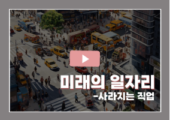
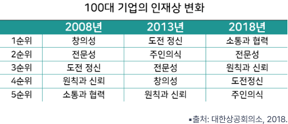
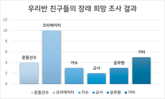

1번
여러 사람 앞에서 ‘미래의 인재’를 주제로 발표할 내용을 구성하려 합니다. 글의 내용에 알맞은 자료를 연결하세요.
미래에는 어떤 인재가 필요할까요? 대한상공회의소에서 조사한 ‘100대 기업의 인재상 변화’에 따르면 2008년에는 창의성이 1순위였는데 2013년에는 도전 정신이, 2018년에는 소통과 협력이 1순위입니다.
1
2020년까지 사라지는 일자리는 510만 개로, 미래에는 한 사람이 평균 4~5개의 직업을 가져야 한다고 합니다. 우리가 이러한 미래 사회에서 성공하려면 여러 분야에서 다양한 능력을 갖춰야 합니다.
2
우리 반 친구들은 미래에 어떤 직업을 가지고 싶어 할까요? 우리 반 친구들이 미래에 갖고 싶은 직업은 1위가 크리에이터였습니다.
3
ㄱ

ㄴ

ㄷ
